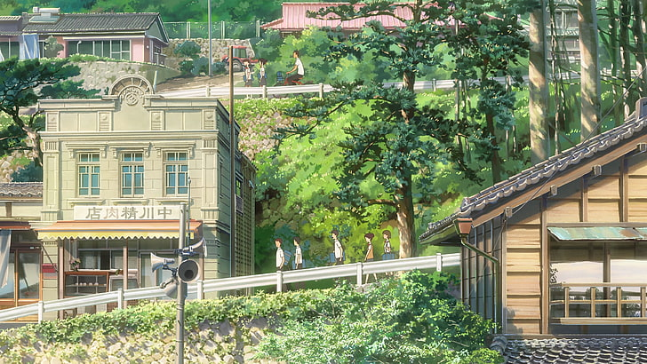
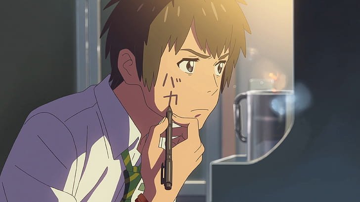
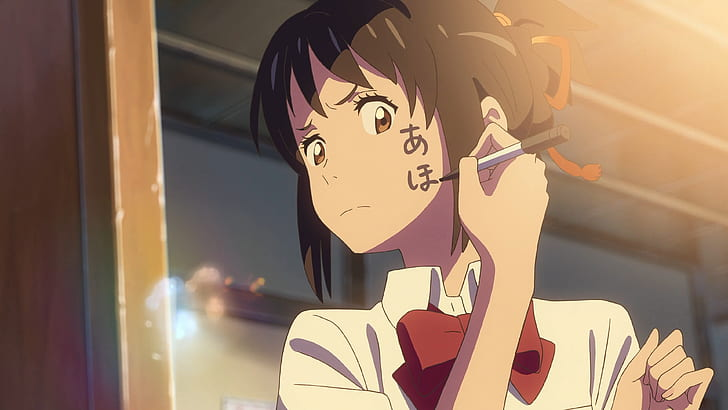
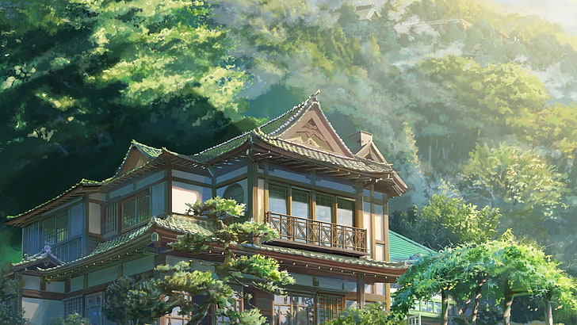
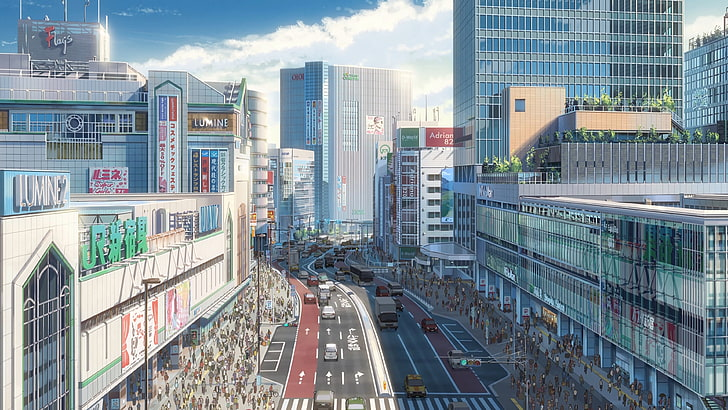
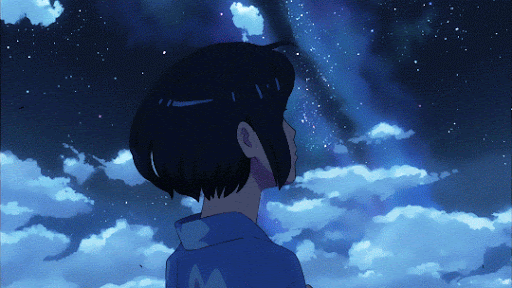
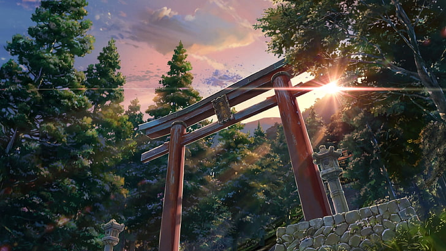
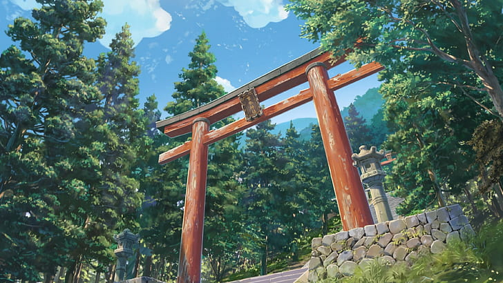
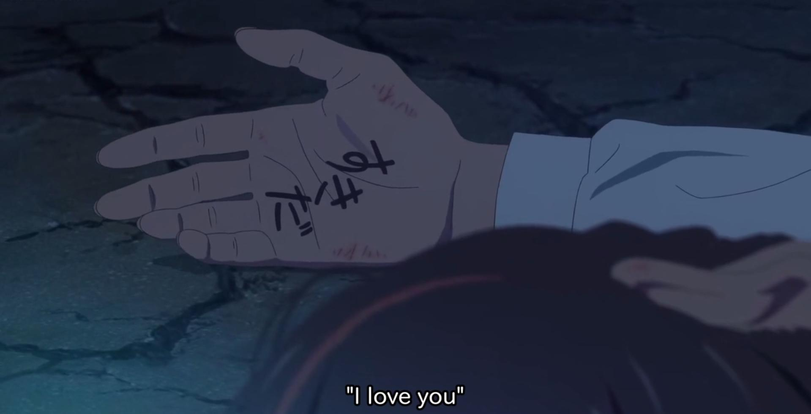

Mitsuha, adolescente coincée dans une famille traditionnelle, rêve de quitter ses montagnes natales pour
découvrir la vie trépidante de Tokyo. Elle est loin d'imaginer pouvoir vivre l'aventure urbaine dans la peau de...
Taki, un jeune lycéen vivant à Tokyo. À travers ses rêves, Mitsuha se voit littéralement propulsée dans la vie du
jeune garçon. Quel mystère se cache derrière ces rêves étranges qui unissent deux destinées que tout oppose et qui
ne se sont jamais rencontrées ?

Mitsuha, dix-sept ans, est lycéenne dans le petit village lacustre d’Itomori. Orpheline de mère, elle vit avec sa
petite sœur, Yotsuha, et sa grand-mère, Hitoha, son père ayant quitté le foyer pour se lancer dans la politique et
devenir maire. Partageant son temps entre les études, ses amis, et son rôle de miko, dont le savoir lui est
transmis par sa grand-mère, elle étouffe, et rêve d’une autre vie en tant que beau jeune homme à Tokyo.
Taki, de son côté, est un lycéen tokyoïte timide et doué en dessin. Lorsqu’il ne traîne pas avec ses amis au lycée
ou au café, il travaille dans un restaurant italien comme serveur, où il est amoureux d’une collègue plus âgée,
Miki, sans avoir jamais osé se déclarer.
Alors qu’une comète passe dans le ciel d’Itomori, leur destin va basculer lorsqu’ils se rendent compte qu’ils se
retrouvent chacun dans le corps de l’autre à raison de deux ou trois jours par semaine. Rapidement, ils tentent de
communiquer et de se connaître par l’entremise de messages écrits sur leurs corps, puis dans leurs téléphones
portables respectifs, établissant des règles pour ne pas perturber la vie de l’autre. Malgré tout, Mitsuha, dans
le corps de Taki, parvient à séduire Miki et à lui obtenir un rendez-vous, mais lors de celui-ci, Taki se retrouve
gêné, malgré la gentillesse compréhensive de Miki, qui pense qu’il est tombé amoureux d’une autre, et reste son
amie.

立花 瀧 Taki Tachibana
Taki passe sa vie à dessiner, entre le lycée et le restaurant où il travaille. Il est d’ailleurs
tombé amoureux de Miki, une serveuse à qui il n’ose pas déclarer sa flamme. Il aimerait sans doute une vie
plus simple.

宮水 三葉 Mitsuha Miyamizu
Mitsuha vit avec sa soeur Yotsuha, et sa grand-mère Hitoha dans la petite ville d’Itomori. Sa mère
est décédée et son père est parti pour s’occuper de sa carrière politique. Mitsuha s’ennuie ferme et rêve de
Tokyo.
Lier les fils, c’est ‘Musubi’. Lier les gens c’est ‘Musubi’. Le cours du temps c’est ‘Musubi’. Les
tresses que nous fabriquons sont l’art de ce Dieu et représentent le cours du temps lui-même. Elles se rassemblent
pour prendre forme. Elles se tordent et se mèlent. Parfois elles se cassent ou se séparent mais pour se réunir à
nouveau. C’est ‘Musubi’. C’est le temps. Que ce soit l’eau, le riz ou le saké, quand vous ingérez quelque chose,
cela se lie à votre âme. Il se crée un lien. ‘Musubi’.


Après ce rendez-vous, plus aucun échange ne se produit, et Taki décide de partir à la recherche de Mitsuha, ne
parvenant pas à la joindre sur son portable. Ne sachant rien de l’endroit où elle habite, il tente de se repérer
avec les croquis d’Itomori qu’il a esquissés. Alors qu’il commence à perdre espoir, un restaurateur reconnaît son
dessin et lui apprend une affreuse nouvelle : Itomori a été détruite trois ans auparavant par une météorite issue
du cœur brisé d’une comète, et beaucoup de ses habitants sont morts. En cherchant dans les registres, Taki
retrouve le nom de Mitsuha, de sa famille et de ses amis dans la liste des victimes. Il comprend alors que leurs
échanges ne s’effectuaient pas dans la même trame temporelle, et voit les messages sur son portable disparaître
petit à petit.
Désespéré, le jeune homme se souvient d’un rite shinto d’offrande de kuchikamizake qu’il a vécu dans la peau de
Mitsuha, et retrouve le sanctuaire où le saké sacré a été déposé. Il décide de le boire en demandant au dieu de le
ramener à l’époque où son amie était encore en vie, et se retrouve projeté dans les méandres du temps. En revivant
les dernières journées de Mitsuha et la chute de la comète, il s’aperçoit et se souvient que la jeune fille avait
tenté de le retrouver à Tokyo la veille de la catastrophe, mais s’apercevant qu’il ne la connaissait pas, elle
s’était enfuie, lui laissant un ruban qu’il avait conservé attaché à son poignet.



Taki se retrouve finalement une dernière fois dans la peau de Mitsuha, le matin avant la chute de la météorite.
Alors qu’il tente de fomenter avec les deux amis de Mitsuha un plan pour faire évacuer la population, il se heurte
à l’implacabilité du maire ; il court alors vers le sanctuaire pour retrouver Mitsuha, afin qu’elle puisse
convaincre son père. Cette dernière se réveille dans le corps de son ami, et sort du sanctuaire, se demandant ce
qu’il fait à Itomori, et constate avec effroi le cratère créé par le météore. Au crépuscule, en se guidant avec
leurs voix, ils finissent par se retrouver sur une crête par-delà le temps, et se parlent quelques instants ; le
jeune homme rend le ruban à son amie, et pour ne pas oublier leurs prénoms respectifs, Taki écrit sur la main de
Mitsuha, mais au moment où elle va écrire sur la sienne, elle s’estompe, et le stylo tombe ; ils se retrouvent
chacun dans leur époque et dans leur corps, perdant rapidement les souvenirs liés à l’autre. En courant pour
retourner au village, Mitsuha regarde sa main et constate que Taki y a écrit « Je t‘aime » ; elle parvient
finalement à convaincre son père d’organiser un exercice d’évacuation, ce qui permet de sauver la population du
village lorsque la météorite tombe.

Quelques années plus tard, Taki est toujours à Tokyo et cherche du travail ; Miki vient le voir et lui souhaite
de trouver le bonheur, mais il ressent constamment un manque, se demandant pourquoi il s’est beaucoup intéressé à
la catastrophe d’Itomori à une époque et a fini par se réveiller seul dans la montagne aux abords du village.
Mitsuha est également venue vivre à Tokyo, et ils se croisent à l’occasion sans se reconnaître. Alors qu’ils sont
tous deux dans des trains allant dans des directions opposées, leurs regards se rencontrent par la fenêtre, et ils
ressentent une forte émotion. Sortant chacun à la station suivante, ils courent pour tenter de se retrouver et se
croisent dans un escalier. Alors qu’ils semblent ne pas se reconnaître, ils finissent par se retourner tous les
deux, et Taki demande à Mitsuha s’il ne la connaît pas ; elle répond qu’elle a la même impression, et ils se
demandent leur prénom, les yeux pleins de larmes.